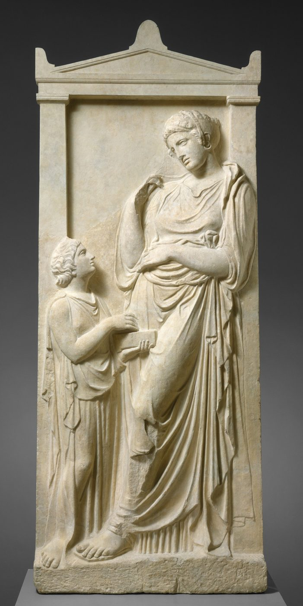

Unit 7 · Women in ancient Greece · Lesson 3
The ideal of the silent wife
Attitudes in Thucydides, Xenophon and Against Neaera: what three elite Athenian men said a good wife or widow should be, and how to account for what they said.
Year 11 Ancient History · Present with → or space · Read on a phone with R

Images: The Met (CC0 1.0). Full details on the last slide.
Review · books closed · 6 minutes · press K for the timer
Five questions from Lessons 1–2
- What period does this unit study, and in which two settings? About 500–30 BCE: Classical Athens (about 500–323 BCE) and the Ptolemies’ Greek kingdom in Egypt (323–30 BCE).
- Why do papyri survive almost only from Egypt? Nearly all papyri are found in the Egyptian desert, where the climate was dry enough to preserve them; very little survives anywhere else.
- Who was Euphiletus? The Athenian husband on trial for killing Eratosthenes, who he said had seduced his wife. The speechwriter Lysias wrote the speech for him to deliver in his own defence (Lysias 1), and its point was that he had set no trap.
- How old was Ischomachus’s wife when she married him? “Not yet fifteen”, he tells Socrates (Xenophon, Oeconomicus 7.5).
- Writing · fix this answer. Question: “Describe the Hegeso stele. (3 marks)” · Answer: “It is a source.” Describe asks for ‘characteristics and features’ (NESA); “It is a source” gives none. A fix, three features in three sentences: “The Hegeso stele is a marble grave relief from Athens of about 410–400 BCE. It shows a seated woman looking at an object in her raised hand, probably jewellery that was once painted, while a standing attendant holds an open box. An inscription above the figures names her: Hegeso, daughter of Proxenos.”
Mark your own answers in a different colour. Which question did you find hardest?
Learning intentions and success criteria · 2 minutes
Today’s goals
- analyse attitudes towards women in three Athenian sources
- account for those attitudes from each writer’s context
- explain the attitude each source reveals
- account for an attitude with reasons from the writer’s context and purpose
- extend a claim with because / but / so
Syllabus outcomes: AH-11-04 accounts for the different perspectives of individuals and groups in their historical context · AH-11-05 analyses different types of sources for evidence to support a historical account or argument · AH-11-07 communicates historical understanding, applying historical knowledge, terms and concepts. Life Skills: AH-LS-07 identifies different perspectives of the past · AH-LS-11 communicates information about the past using historical terms and concepts.
Note-making · the routine for the whole course
How to structure your notes
questions and key terms, written after
short phrases, arrows (→ leads to), abbreviations (c. = about; BCE = Before the Common Era)
- 1A new page for each lessonA cue column about a quarter of the page wide; title and date at the top; room for a summary at the bottom.
- 2Listen and look, then writeDon’t copy while a slide is being explained. Phrases, not sentences; a source for every claim.
- 3Write your own notes at each ✎ checkpointThen compare with the model notes, one row at a time. Add what you missed in a second colour.
- 4Write the cue questions afterwardsUse exam verbs: explain, analyse, account for. To revise, cover your notes and answer the cues.
- 5Finish with a three-sentence summaryTwo checkpoints today: Thucydides and Xenophon · Against Neaera and the ideal.
Key vocabulary · add to the unit word wall
Words for attitudes and ideals
| Writing terms | Meaning |
|---|---|
| Account for | ‘state reasons for, report on.’ (NESA) — Give the reasons, here from a writer’s context. |
| Perspective | The point of view a source presents, shaped by its maker, audience and purpose. |
| Added today | Meaning |
| Ideal | What a writer says a person should be or do, which may differ from how people actually lived. |
| Elite | The wealthy, leading families of a society. |
| Content terms | Meaning |
|---|---|
| Polis / oikos | A Greek city-state, such as Athens / a household: its people, property and slaves. |
| Hetaira | A companion or courtesan, usually not a citizen. |
| Added today | Meaning |
| Legitimate children | Children of a lawful marriage, whom a father could introduce to his clan and deme ([Demosthenes] 59.122). |
| Seclusion | Keeping women apart from men outside the family, especially indoors. How far Athenians practised it is debated. |
1 · Two men’s ideals · I do — think aloud: who speaks, to whom, and what does he want believed?
Pericles to the widows: “least talked of”
On the other hand if I must say anything on the subject of female excellence to those of you who will now be in widowhood, it will be all comprised in this brief exhortation. Great will be your glory in not falling short of your natural character; and greatest will be hers who is least talked of among the men whether for good or for bad.
Thucydides, an Athenian general, writing during and after the war of 431–404 BCE, History of the Peloponnesian War 2.45.2: the speech at the public funeral for the war dead, winter 431/430 BCE · trans. R. Crawley (Dent, 1910), Perseus Digital Library
Words: female excellence what makes a woman good · widowhood being a widow · exhortation urging, advice
Cold call: what does “if I must say anything” suggest about his attitude?
He speaks of women briefly and almost reluctantly: two sentences, the last part of his advice to the families, and even praise of a woman is something to avoid.
- 1Who speaks?Pericles, “chosen by the state” to give the speech, as Thucydides reports him. Thucydides says he gave speakers “what was in my opinion demanded of them by the various occasions”, keeping as close as he could to “the general sense of what they really said”.
- 2To whom?A funeral crowd of citizens and strangers, where “the female relatives are there to wail at the burial”. After the parents and the sons and brothers of the dead, the speech turns to the widows.
- 3What does he want believed?A widow’s glory is not to fall short of her “natural character”, and the best woman is the one men talk about least, “whether for good or for bad”.
1 · Two men’s ideals · I do — think aloud: who speaks, to whom, and what does he want believed?
Ischomachus to his young wife: “indoors”
And since both the indoor and the outdoor tasks demand labour and attention, God from the first adapted the woman’s nature, I think, to the indoor and man’s to the outdoor tasks and cares. [7.30] … the law declares those tasks to be honourable for each of them wherein God has made the one to excel the other. Thus, to the woman it is more honourable to stay indoors than to abide in the fields, but to the man it is unseemly rather to stay indoors than to attend to the work outside.
Xenophon (about 430–354 BCE), a wealthy Athenian and friend of Socrates, Oeconomicus (a dialogue on running an estate), probably written after 362 BCE · trans. E. C. Marchant (Loeb, 1923), the printed text; Perseus Digital Library
Words: adapted made suitable · excel do better than · abide stay · unseemly improper, shameful
- 1Who speaks?Ischomachus, an Athenian gentleman with an estate, as Socrates reports him. Xenophon wrote the whole dialogue.
- 2To whom?His young wife, “not yet fifteen” when they married, in their “earliest talks”; and, through the book, Xenophon’s readers.
- 3What does he want believed?That God made a woman’s nature for indoor work and a man’s for outdoor work, and that the law makes staying indoors more honourable for her.
- 4Whose household?A wealthy one: she is to “remain indoors and send out those servants whose work is outside” (7.35).
Cold call: what do the words “I think” tell us?
That this is Ischomachus’s opinion, which he presents as God’s plan and the law’s: a claim about women’s nature, not a fact.
Notes checkpoint 1 of 2
Two men’s ideals: who says what, to whom
2 · A speech to a jury · We do — supported reading: read it together, then answer in pairs
A prosecutor tells a jury what a wife is for
The case in brief: in an Athenian court, about 343–340 BCE, Apollodorus and his brother-in-law Theomnestus prosecuted Neaera, a foreign woman, for living as the wife of an Athenian citizen, Stephanus, which the law forbade. Apollodorus gave most of the speech. Stephanus, he says, would claim she was only his mistress.
For this is what living with a woman as one’s wife means—to have children by her and to introduce the sons to the members of the clan and of the deme, and to betroth the daughters to husbands as one’s own. Mistresses we keep for the sake of pleasure, concubines for the daily care of our persons, but wives to bear us legitimate children and to be faithful guardians of our households.
A law-court speech kept among the speeches of Demosthenes, but spoken and probably written by Apollodorus · trans. A. T. Murray (Loeb, 1939); Perseus Digital Library
Words: clan, deme groups of citizens to whom a father introduced his sons · betroth promise in marriage · mistresses Murray’s word for hetairai · concubines women living with a man without being his wife · persons bodies
- 1What does the speaker assume a wife is for?To bear legitimate children, sons a father could present to his clan and deme, and to guard the household faithfully. Pleasure and daily care he gives to other women.
- 2Who is “we”?Athenian men: the speaker includes the jurors with himself (“we keep”, “bear us”).
- 3Why say it to a jury?To win his case. Stephanus would call Neaera his mistress, so Apollodorus defines a wife by her children, whom, he alleged, Stephanus had passed off as his own. He speaks as one Athenian husband to others, so he states an ideal they would accept.
2 · A speech to a jury · We do — complete the attitude grid in your booklet
Three men, three audiences: the attitude grid
| Source | Speaker and audience | Attitude | Reason from context |
|---|---|---|---|
| Thucydides 2.45.2 | Pericles, as Thucydides reports him; to the widows, before the crowd at a public funeral, winter 431/430 BCE | A widow’s glory is to be least talked of among men, for good or bad | You account for this in today’s writing |
| Xenophon, Oeconomicus 7.22, 7.30 | Ischomachus to his young wife, as Socrates reports it, in Xenophon’s dialogue on running an estate (probably after 362 BCE) | God made women for indoor tasks; staying indoors is more honourable for a woman | You account for this in today’s writing |
| [Demosthenes] 59.122 | Apollodorus, for the prosecution, to a jury of Athenian men, about 343–340 BCE | A wife exists to bear legitimate children and guard the household; other women serve pleasure or daily care | He had to show that Stephanus lived with Neaera as a wife, not a mistress, and he spoke as a husband to male citizens with wives, daughters and mothers |
The last column is the heart of an account-for answer: why would this man, speaking to this audience, say this?
2 · A speech to a jury · We do — the big question for every source today
Ideals of elite men, or how women lived?
- 1Elite menA leading citizen, as an Athenian general reports him; a wealthy writer’s model husband; a banker’s son in court. None was written by a woman, and the young wife’s few replies in the Oeconomicus reach us only through her husband’s report.
- 2An ideal of the wealthyIschomachus’s wife can stay indoors because servants do the outside work.
- 3DebatedHow far Athenians actually kept women at home is debated by historians. Poorer women worked outside the house (Lesson 7).
… how is it possible to prevent the wives of the poor from going out of doors?
Aristotle, a Greek philosopher, 4th century BCE · trans. H. Rackham (Loeb, 1944), Perseus Digital Library. Rackham’s note: “Or possibly ‘from going in processions’”.
Cold call: do these three sources show how Athenian women lived?
Not on their own. They show what three elite men said a woman should be, each to an audience: a funeral crowd, readers of a book on running an estate, a jury. In Xenophon a wife stays indoors because servants do the outside work, so it was an ideal of the wealthy, and how far even they practised it is debated. Even Aristotle asked how the wives of the poor could be kept from going out.
Notes checkpoint 2 of 2
A speech to a jury, and the ideal of the wealthy
3 · You do · Writing focus · 7 minutes · I do → We do → apply
Writing focus: account for an attitude with because, but and so
Account for: ‘state reasons for, report on.’ NESA, Glossary of key words So (department advice): the reasons must come from the writer’s context and purpose. because = a reason · but = a limit · so = what follows · an appositive names who he was, between commas.
Worked example · written for this lesson · kernel: Apollodorus says wives exist to bear legitimate children.
because Apollodorus, a citizen prosecuting the foreign woman Neaera, says wives exist to bear legitimate children because he had to show that Stephanus lived with her as a wife, not as a mistress.
but Apollodorus says wives exist to bear legitimate children, but he spoke to win a trial, not to describe marriage.
so Apollodorus says wives exist to bear legitimate children, so his words show what he expected a jury of Athenian men to accept.
All three Apollodorus, a citizen prosecuting the foreign woman Neaera before a jury of male citizens, presents wives as bearing “legitimate children” because his case set citizen marriage apart from life with a hetaira, but he spoke to win a trial, so his words show what he expected jurors to accept rather than how every marriage worked.
Kernel from Lesson 2: Euphiletus praises his wife as a housekeeper. In pairs, extend it with the conjunction your teacher gives you, and add an appositive; then cold call.
because Euphiletus, a husband on trial for killing his wife’s lover, praises his wife as a housekeeper because his defence needed the jurors to believe that he had trusted her and set no trap.
but Euphiletus praises his wife as a housekeeper, but only as she was ‘in the early days’, before the affair his speech goes on to describe.
so Euphiletus praises his wife as a housekeeper, so his speech suggests that careful management of the house was what a husband expected jurors to admire in a wife.
Write your first sentence on Thucydides or Xenophon: “[Writer], a…, presents… because…, but…, so…” Your Writing toolkit (booklet pages 3–4): connectives by function.
3 · You do · 19 minutes in all · deconstruct the question first
Your account-for answer: deconstruct it first
Account for the attitudes towards women in Thucydides 2.45 and Xenophon’s Oeconomicus. 6 marks
Deconstruct it: what does this question ask you to do?
| Step | This question |
|---|---|
| Verb | Account for: ‘state reasons for, report on.’ (NESA). Give the reasons each writer presents this attitude, from his context and purpose (department advice) |
| Topic | attitudes towards women: what each writer says a woman should be or do |
| Limits | two sources only: Thucydides 2.45 (Pericles to the widows) and the Oeconomicus (7.22 and 7.30; 7.5 from Lesson 2); attitudes, so both writers |
| Do | a developed paragraph for 6 marks (department advice): for each writer, the attitude with brief evidence, then because … but … so … from his context; end with the reason that mattered most |
Check first: where must every reason in your answer come from?
From the writer’s context and purpose: who speaks, to whom, when and why. Not from a modern judgement such as “he was sexist”, which describes the attitude but does not account for it.
3 · You do · writing 12 minutes · then check it · press K for the timer
Write your account-for answer
Account for the attitudes towards women in Thucydides 2.45 and Xenophon’s Oeconomicus. 6 marks
- Open with the first writer: who he was (an appositive) and the attitude, with a short quotation.
- Give a reason from his context and purpose (because), a limit (but) and what follows (so).
- Do the same for the second writer.
- End with the reason that mattered most.
Assess whether these sources reveal what Athenian men believed, or what a particular audience wanted to hear.
Use your attitude grid and Notes 1. Word bank:
Frame: “[Writer], a…, presents… because…, but…, so…”
3 · You do · after you write · compare yours with a model
A model account-for answer: reasons from two contexts
Both writers present a good woman as one who keeps out of men’s public world, and each attitude can be accounted for by who speaks, to whom and why. Pericles, speaking at the public funeral for the first Athenians to fall in the war, in winter 431/430 BCE, tells the new widows that the greatest glory is hers ‘who is least talked of among the men whether for good or for bad’ because the speech, as Thucydides reports it, honoured the men who had died for the city and turned to the widows only in two sentences at the end of his advice to the families; but these are Thucydides’s words, written for what the occasion demanded while keeping to the general sense, so they show the ideal a leading citizen could set before the city, not how widows lived. Ischomachus, a wealthy Athenian training his young wife in Xenophon’s dialogue on running an estate, claims that ‘God from the first adapted the woman’s nature, I think, to the indoor’ tasks and that ‘to the woman it is more honourable to stay indoors’ because, in his argument, an estate needed someone indoors to keep the stores and send the servants out to work while he worked outside; but his was a household with servants, so the ideal suited only families that could afford them. Of these reasons, each writer’s purpose mattered most: a speech honouring the war dead and a dialogue teaching estate management both set out what an elite Athenian man thought a woman should be.
Finish your notes If time · or at home
Summary: three sentences
- What attitude do Thucydides’s Pericles and Xenophon’s Ischomachus present?
- What does Against Neaera assume a wife is for, and why say it to a jury?
- Why are these ideals, not evidence of how most women lived?
Thucydides’s Pericles and Xenophon’s Ischomachus present a good woman as one who keeps out of men’s talk and inside the house. Apollodorus, the main speaker of Against Neaera and probably its author, defines wives by legitimate children and the care of the household, an ideal he set before a jury of Athenian men to win his case. All three are attitudes of elite men shaped by their audiences and purposes, so they show ideals, mostly of wealthy households, rather than how most Athenian women lived.
Check for understanding · hinge question · hold up your A, B, C or D card on “3, 2, 1, show”
Who speaks the words “to the woman it is more honourable to stay indoors”?
- ASocrates, in Plato’s Menexenus
- BPericles, in Thucydides
- CIschomachus, in Xenophon’s Oeconomicus
- DApollodorus, in Against Neaera
He tells his young wife that God and the law make staying indoors more honourable for a woman, and Socrates reports it. A is wrong: the words are not from Plato’s Menexenus; Socrates is in the Oeconomicus, but only as the narrator who reports Ischomachus. B is wrong: Pericles praises the widow “least talked of among the men”, and says nothing about indoors. D is wrong: Apollodorus says wives are “to bear us legitimate children and to be faithful guardians of our households”.
Exit ticket · 4 minutes · before you leave
One reason, from his context
… greatest will be hers who is least talked of among the men whether for good or for bad.
Thucydides, History of the Peloponnesian War 2.45.2 · trans. R. Crawley (Dent, 1910), Perseus Digital Library
Give one reason, from his context, for Pericles’s praise of the woman “least talked of”.
A state funeral for the war dead, where the speech honoured the men who had died for the city · a speech by a man the city chose to speak for it, so he set out the city’s public ideal and gave the widows only two sentences · an ideal of the respectable widow that his hearers would accept. Not “because he was sexist”: that judges the attitude but does not account for it.
Then check yourself against today’s three “I can” statements. Next lesson: voices on the stage and in court: Medea, Lysistrata and the wife in Lysias 1.
Before next lesson: it reads part of a Greek tragedy, Medea, in which a mother later kills her children, and refers to a speech about adultery and a killing. Neither is described in detail. If you would prefer not to discuss these, talk to your teacher.
Practice and review · 1 of 4 · true, false, justify
True or false? Justify your answer
- 1In Thucydides 2.45.2, Pericles praises the widow who is most talked about for her good deeds. False — the greatest glory is hers “who is least talked of among the men whether for good or for bad”.
- 2In the Oeconomicus, Socrates tells his own wife that her place is indoors. False — Ischomachus tells his young wife, and Socrates reports it, in a dialogue Xenophon wrote.
- 3Ischomachus claims that both God and the law support his division of tasks. True — God “adapted the woman’s nature, I think, to the indoor” tasks (7.22); “The law, moreover, approves of them” (7.30).
- 4Against Neaera was certainly written by Demosthenes. False — it was kept among his speeches, but critics ancient and modern have mostly agreed that someone else wrote it; most scholars now think Apollodorus did.
- 5In 59.122 the speaker says that wives are kept for the sake of pleasure. False — “Mistresses we keep for the sake of pleasure”; wives are “to bear us legitimate children and to be faithful guardians of our households”.
- 6Aristotle thought a democracy could easily keep poor men’s wives indoors. False — he asks “how is it possible to prevent the wives of the poor from going out of doors?”, although his translator notes he may mean going out in processions.
Practice and review · 2 of 4 · writing · because, but, so
Fix the sentence, then deconstruct a new question
- “Apollodorus describes wives as bearing legitimate children because Athenian women were oppressed.” The because gives a modern judgement, not a reason from his context. “… because he had to show that Stephanus lived with Neaera as a wife, not, as Stephanus would claim, as a mistress.”
- “Euphiletus praises his wife as a housekeeper, but he also describes his house.” The but only adds a point; it sets no limit. “…, but only as she was ‘in the early days’, before the affair his speech goes on to describe.”
- “Apollodorus spoke to a jury of Athenian men, so all Athenian marriages were like this.” The so claims far more than one speech can show. “…, so his words show what he expected the jurors to accept, not how every marriage worked.”
- Exercise 2 · deconstruct: “Account for the attitude towards wives in Lysias 1.” What is the verb, the topic, the limits, and what must the answer do? Verb: account for, ‘state reasons for, report on.’ (NESA). Topic: the attitude towards wives. Limits: Lysias 1 only, so Euphiletus’s words about his own wife, written for him by Lysias. Do: the attitude with brief evidence, then reasons from his context and purpose (a defence speech to a court of Athenian men), with because, but and so.
Practice and review · 3 of 4 · extension · assess
What men believed, or what an audience wanted to hear?
Assess whether these sources reveal what Athenian men believed, or what a particular audience wanted to hear.
Use all three sources from today. Shape: Judge → Evidence → Analyse → Evaluate → Resolve, with the same degree in the Judge and the Resolve.
Assess: ‘Make a judgement of value, quality, outcomes, results or size.’ NESA, Glossary of key words
These sources reveal, to a large extent, what a particular audience was expected to accept, although that is itself evidence of what many elite Athenian men believed. Each was shaped for its hearers: Pericles, as Thucydides reports him, gave the widows two sentences at a state funeral, praising the woman ‘least talked of among the men’; Ischomachus, in a dialogue on running an estate, tells his young wife that ‘to the woman it is more honourable to stay indoors’; and Apollodorus told a jury of Athenian men that wives exist ‘to bear us legitimate children’, because he had to show that Stephanus treated Neaera as a wife. Because each speaker wanted to persuade or to teach, none of them can show what Athenian men privately thought, let alone how women lived. Yet a speaker who wants to win over an audience appeals to what it already values, and a similar ideal, a respectable woman defined by her household and kept out of public notice, appears in a funeral speech, a dialogue and a law court, so it was probably shared by many wealthy Athenian men. On balance, the sources reveal, to a large extent, what each audience wanted to hear, but because three different audiences heard a similar ideal, they also suggest what many elite men believed.
Practice and review · 4 of 4 · cover your notes and answer from memory
Quick checks
- Who speaks in Thucydides 2.45.2, to whom, and what ideal does he set? Pericles, as Thucydides reports him, to the widows at the public funeral for the war dead in winter 431/430 BCE: the best woman is least talked of among men, for good or bad.
- What do Oeconomicus 7.22 and 7.30 claim, and who says it to whom? That God fitted a woman’s nature for indoor tasks and that the law makes staying indoors more honourable for her; Ischomachus says it to his young wife, as Socrates reports it in Xenophon’s dialogue.
- Who prosecuted Neaera, and what was the charge? Apollodorus and his brother-in-law Theomnestus, in about 343–340 BCE: that Neaera, a foreign woman, was living as the wife of an Athenian citizen, Stephanus.
- What does [Demosthenes] 59.122 say wives are for, and why say it to a jury? To bear legitimate children and faithfully guard the household; because Apollodorus had to show that Stephanus lived with Neaera as a wife, and he spoke as a husband to a jury of men.
- Why are these sources better evidence of attitudes than of women’s lives? They are the ideals of elite men, each shaped by an audience and a purpose; no woman wrote any of them (the wife’s replies in the Oeconomicus come through her husband), Xenophon’s indoor ideal relied on servants, and how far seclusion was practised is debated.
- What does account for ask, and what do because, but and so each add? NESA: account for means ‘state reasons for, report on.’ Here, reasons from the writer’s context. Because adds a reason, but a limit, and so a result.
Sources and credits
Where everything comes from
Thucydides 1.22, 2.34, 2.44–2.46: trans. R. Crawley (Dent, 1910; public domain), Perseus Digital Library. Xenophon, Oeconomicus 2.6, 7.3, 7.5, 7.19–7.23, 7.30, 7.35, 7.43: trans. E. C. Marchant (Loeb, 1923), Perseus Digital Library (CC BY-SA 3.0 US), with 7.30 from the printed volume (archive.org); short extracts quoted for study. [Demosthenes] 59, Against Neaera 16, 114, 119, 122, and the translator’s introduction: trans. A. T. Murray, Demosthenes, Private Orations III (Loeb, 1939; public domain), archive.org; also on Perseus, which credits it to N. W. and N. J. DeWitt in error. Aristotle, Politics 4.1300a: trans. H. Rackham (Loeb, 1944; public domain), Perseus Digital Library. Lysias 1.7: trans. W. R. M. Lamb (Loeb, 1930), Perseus Digital Library (CC BY-SA 3.0 US); Lamb’s introduction (Loeb, 1930).
Scholarship: J. Trevett, “History in [Demosthenes] 59”, The Classical Quarterly 40.2 (1990), 407–420, notes 4–5 (Cambridge Core); D. Cohen, “Seclusion, Separation, and the Status of Women in Classical Athens”, Greece & Rome 36.1 (1989), 3–15 (Cambridge Core). Earlier lessons: Leiden Papyrological Institute, “What is papyrology?”; the Hegeso stele records (Lesson 1).
Outcomes and content: NSW Education Standards Authority (NESA), Ancient History 11–12 Syllabus (2024). © NESA. Directive verbs: NESA, Glossary of key words.
- Marble grave stele of a young woman and servant, Attica, about 400–390 BCE (Metropolitan Museum of Art, 36.11.1) · Photo: The Metropolitan Museum of Art · CC0 1.0 · source
All images are public domain or openly licensed, and were resized or cropped for the web. Each is shared under the licence shown.